I design the software side of hardware.
My sweet spot: early-stage healthcare and med-tech companies — usually a founder or a small team with an idea that needs a working prototype to get buy-in.
I've been at this a while now, and have designed the early-stage platforms for some awesome companies — Detect, Pano, Identifeye, and Eko Health.
I'm also a partner at Misfit Labs, a Miami-based AI-native venture studio
(whew, mouthful), with some close friends.
Away from the desk, you'll usually find me walking the dog pack, exploring somewhere new, listening to my wife's record collection, or doing weird things with a kettlebell.
Build exciting tech, then go get lost outside — that's the rhythm.
Have an idea? Send me a note and let's talk it through. hello@scottjohns.me
Detect focused on building a user-friendly testing solution for common STDs and Covid-19, while delivering PCR-quality results in minutes for both point-of-care and at home tests.
I was brought on as a product designer to adapt the Detect at-home testing solution for the point-of-care market. We created a tablet and web-based solution that was versatile enough to accommodate a range of point-of-care testing solutions and workflows.
My involvement in the project wrapped up in August 2023, just as Detect was preparing for the product's official point of care debut. The end product launched with not only all the anticipated features but exceeded those of major competitors in the field, such as Abbot ID NOW and Cepheid XpertXpress. Detect was offered at an accessible price point, making it an affordable choice for nearly any point-of-care testing facility.
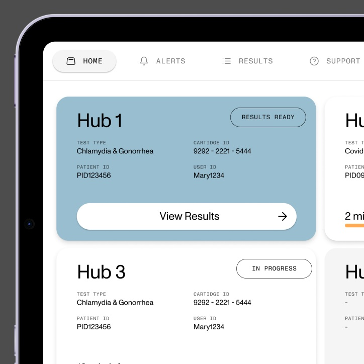
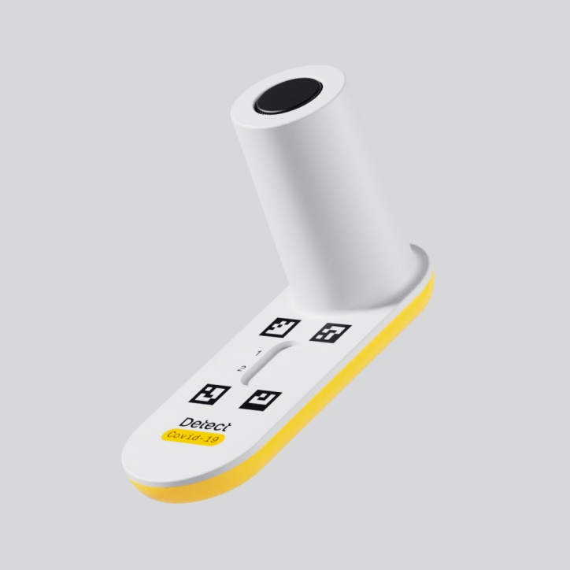
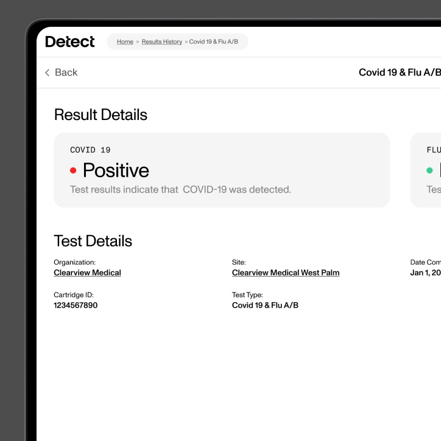
Identifeye Health's mission is to build a portable, cloud-connected device that make retinal scanning outside of the specialist's office and can help with the detection of early stage diseases that might otherwise go unnoticed.
I helped design the first version of the mobile exam-taking application and web portal for clinical review.
The project concluded with the launch of an MVP, which went through a Human Factors focus group to incorporate user feedback. A successful pilot program followed, resulting in Identifeye Health securing an $80 million Series B financing round. These funds enabled the company to assemble a dedicated full-time team, marking the next phase of development on the project.
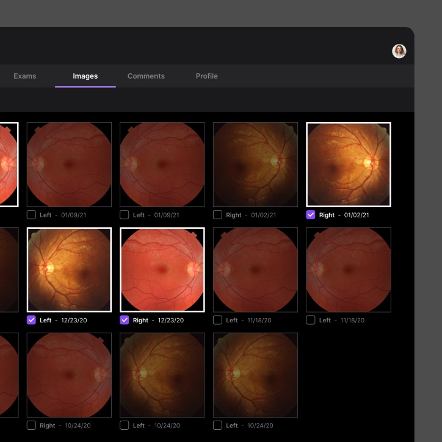
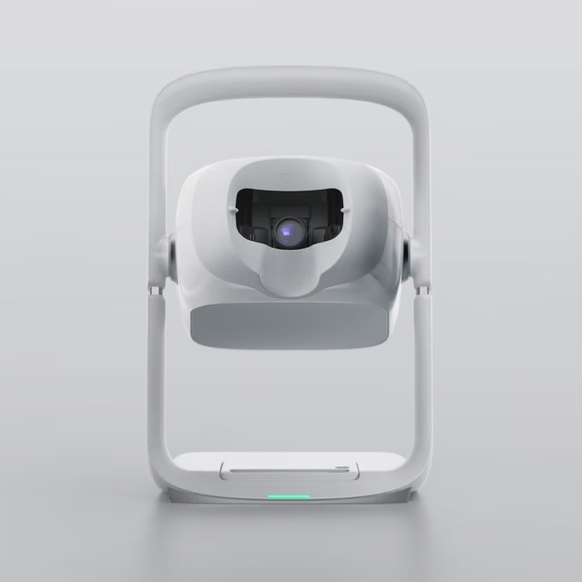
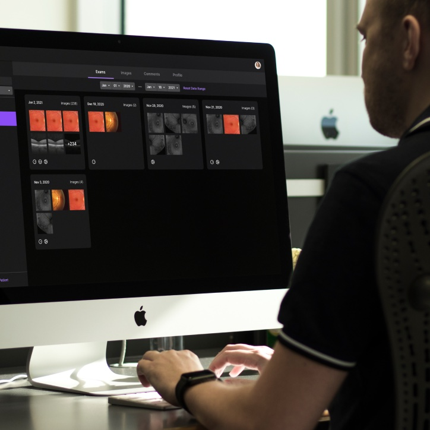
LifeWallet enhanced EHR implementations with modular solutions. The scheduling module stood out for its flexible design, its ability to integrate with existing EHRs, and provide real-time analytics that improved practice efficiency.
I was the design lead at the company and it was acquired in 2021 by MSP Recovery.
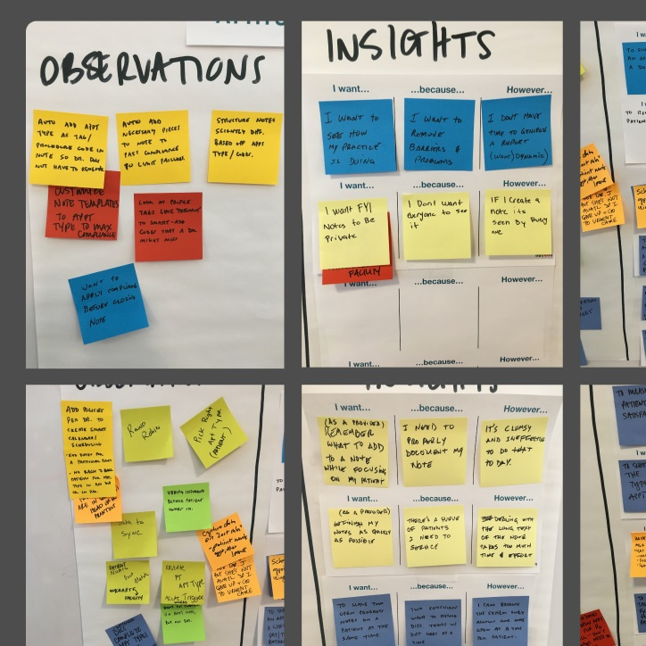
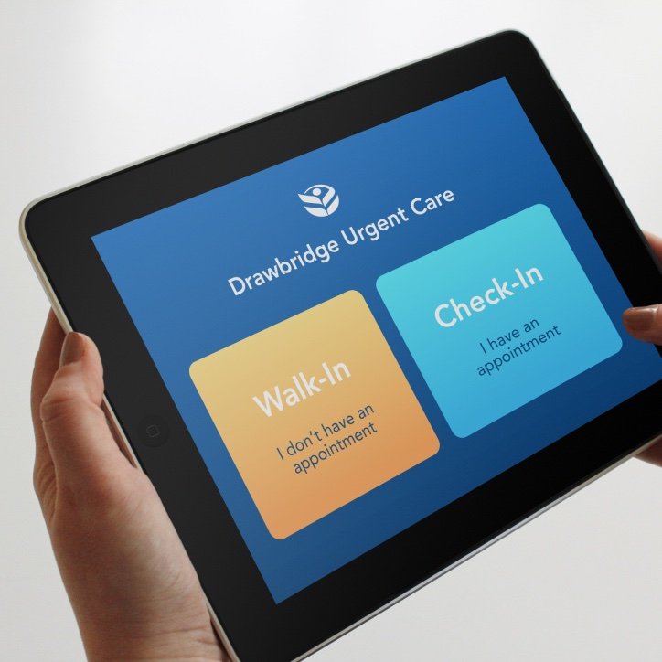
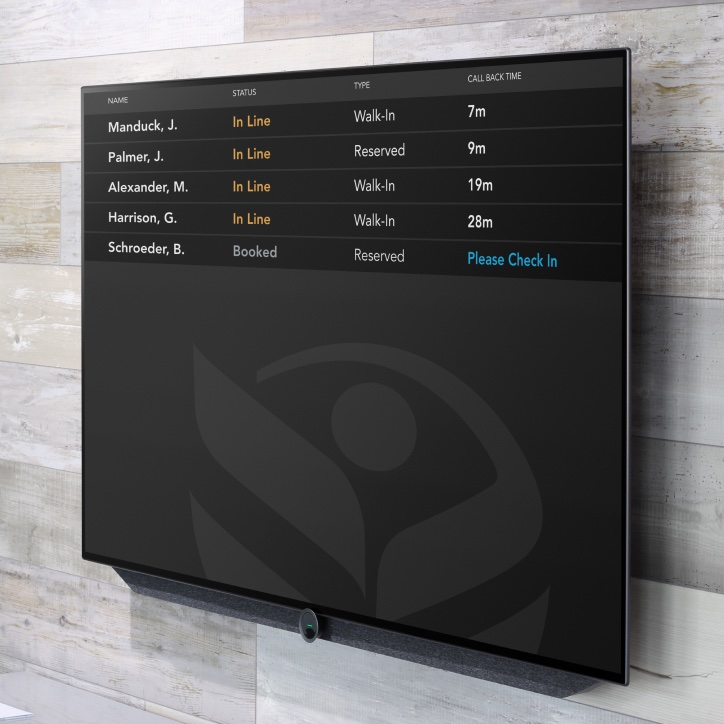
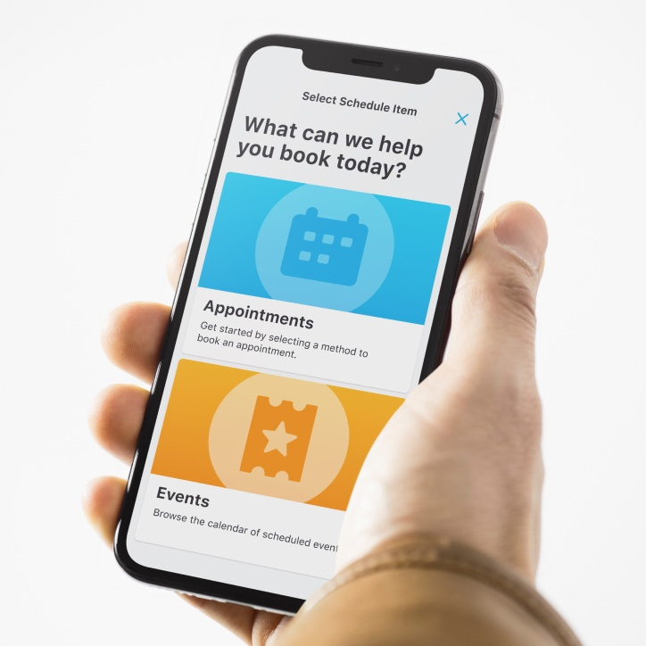
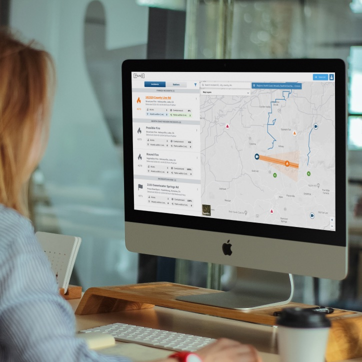
Pano AI's mission is to revolutionize wildfire management through an intelligent platform that rapidly detects and responds to wildfires, protecting lives and property.
I designed the initial version of Pano's responsive web portal, which facilitated the AI capabilities of detecting wildfires and provide tools for management teams to rapidly take action.
Pano's pilot program with a prominent California utility company was a big step. The program's success played a big role helping them raise a $20 million in Series A round. These resources helped enhance the platform, adding a bunch of new features and functionalities. Pano was able to expand internationally, deploying solutions to aid in wildfire management in Australia.
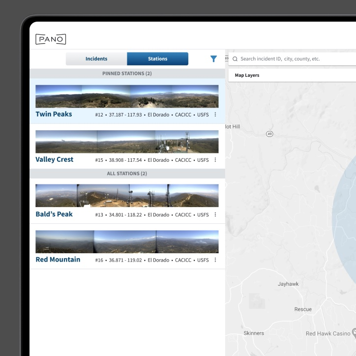
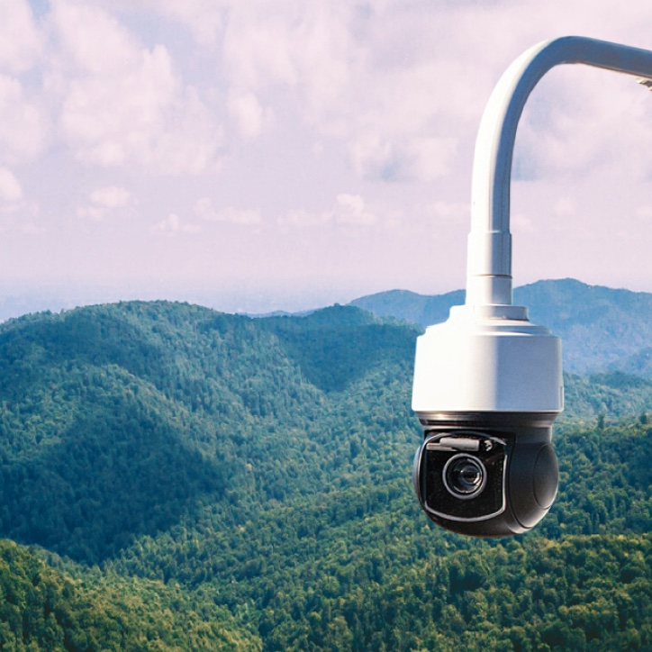
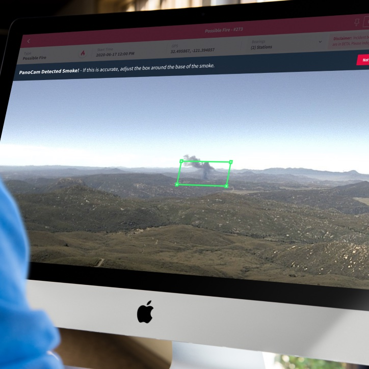
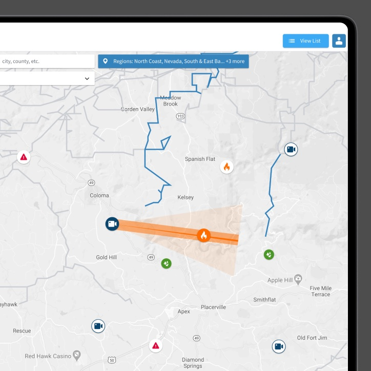